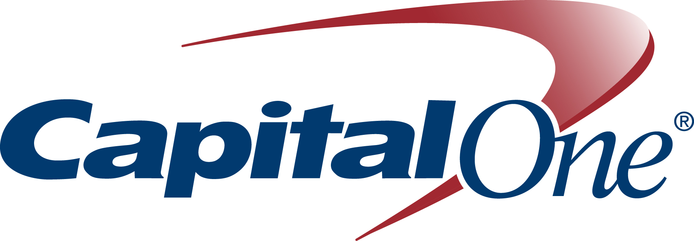

Join DCFemTech, and members of the DC business & tech communities as we celebrate Powerful Women Programmers and Powerful Women Designers at The 2016 DCFemTech Awards Reception.
We'll congratulate women who are working in the trenches of tech & design to help their company or organization achieve success, sometimes entirely behind the scenes. (Both men & women encouraged to attend)
Official program starts at 6:45pm with an address by new DC CTO Archana Vemulapalli.
Appetizers & drinks provided thanks to generous sponsors - Capital One, Siteworx, Wingate Hughes, GitHub & Social Tables.
We can't wait to celebrate with you.
Questions? Email dcfemtech@gmail.com (DCFemTech Award recipients will be announced the week of April 4th)
About our sponsors
 Capital One is a different kind of company – we’re a top 10 bank, but we operate more like a tech company than a financial institution. Diversity, equality, and inclusion are central to the Capital One workplace culture as well. Our Women in Tech initiative that is bringing women and men together to focus on improving the representation of women in the technology field and supporting the career development of women in our organization. We’re growing our teams and hiring engineers, data scientists, and designers and offering them an exciting opportunity to join an organization that is building its own software and changing the way people interact with their money.
About DCFemTech
DCFemTech is a coalition of women leaders aimed at amplifying women in tech organizations, sharing resources, and bringing leaders together to close the gender gap. Members are affiliated with organizations with women attendance that is 50% or higher, who have a focus on technology and who have a primary focus in the mission statement about gender or women.
DCFemTech also shares a list of resources for women seeking places to learn specific skills (development, design, networking, etc.). For up-to-date information follow @DCFemTech on Twitter.